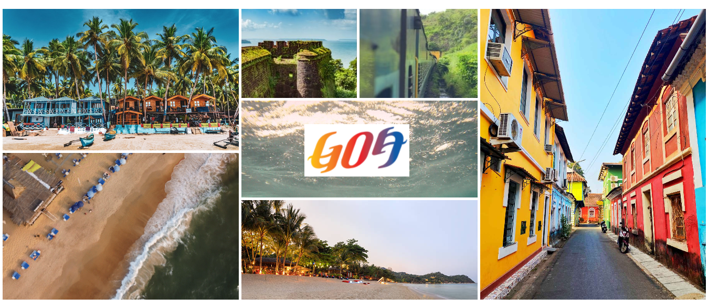

Adventour
Goa
The Land of
Sun,Sand and Spices.
The pocket-sized paradise of Goa is a traveller's dream. Sun, sea, sand,
spices,
spirituality
and seafood, along with a balmy weather, call to the
soul of trekkers, backpackers, nature lovers and those
who
simply want to
languish in its slow-paced and relaxed vibes.

Amazing Tours And Fun
Adventures Waiting For
You
State of Goa is renowned for its breathtaking beaches, rich culture
and pristine
natural
beauty. Formerly a Portuguese colony, Goa offers
travellers a chance to experience a unique blend of sandy
shores, forests,
monuments and delectable cuisine, attracting tourists across age groups.
During winter, its festive ambience is at its peak, while in summers, it boasts lovely
weather that's perfect for a splash in the sea.
As one of the smallest states in India in terms of
geographical extent, Goa packs a vast spectrum of cultural experiences.
Portuguese, Maharashtrian and
Konkani influences are evident in language, food, architecture, dress and dance. Several festivals are
celebrated here that bear testimony to its multi-cultural glory.
Best Time to Visit Goa:
Being a tourist hotspot, Goa can be visited at any time of the year, but the best time to
visit Goa is from November to March,
during the winter months. During this time, the weather is dry and
pleasant, with temperatures ranging between 20°C to 30°C
(68°F to 86°F). This makes it an ideal time to enjoy
the beaches and water sports activities in Goa.
The monsoon season in Goa starts in June and lasts until September, bringing heavy rainfall to the region. While
the rain
can make the scenery lush and green, it may also make it difficult to explore the region and enjoy
outdoor activities. Many
of the beach shacks and restaurants may also be closed during this period.
The summer months from April to May can be hot and humid, with temperatures soaring up to 35°C (95°F). It may
not be the
best time to visit if you're looking for a relaxing beach vacation, but it can be a good time to
explore the region's culture
and history.
In summary, the best time to visit Goa is from November to March, during the winter months, when the weather is
dry and pleasant,
and most of the beach shacks and restaurants are open.
The Destination
Just Right For Your
Vacation
How To Get There
BY
ROAD
conveniently
connected by wide network of road and highways to Mumbai, Pune, Bengaluru and Ernakulum. Goa has three major
bus stops: Panaji, Madgoan and Vasco Da Gama.
BY RAIL
Goa is serviced by Madgoan railway station. which is connected by regular
rail service to Mumbai, Pune and New Delhi.
BY AIR
Goa's Dabolim Airport is located about 25km from its capital, Panaji. Daily flights connect it to Mumbai, New Delhi, Bengaluru, Hyderabad, Chennai and Kolkata.